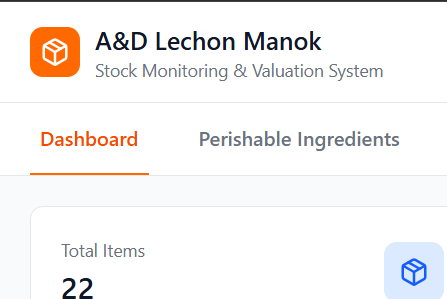

Bachelor of Science in Information Systems student at Davao del Norte State College. Passionate about system analysis, web development, database management, and academic research.
I am currently pursuing a Bachelor of Science in Information Systems at Davao del Norte State College. I am passionate about technology and continuously improving my skills in web development, database management, system analysis, and IT documentation.
Through academic projects, seminars, and hands-on experiences, I have developed technical knowledge in Java programming, networking, database management, research writing, and system development while also strengthening my communication, adaptability, and problem-solving skills.
I aspire to become a skilled IS professional capable of contributing to innovative and technology-driven environments while continuously learning and growing in the field of Information Systems.

A system developed to efficiently monitor inventory and product valuation based on size classifications. The system improves inventory management, tracking, and reporting processes for business operations.
Developed as the final project for IS221 – System Analysis and Design. The system aims to streamline incident reporting and management through a more organized and efficient digital process.
Click the titles below to view the full paper.
Feel free to reach out for collaborations, projects, academic work, or opportunities related to Information Systems and technology.